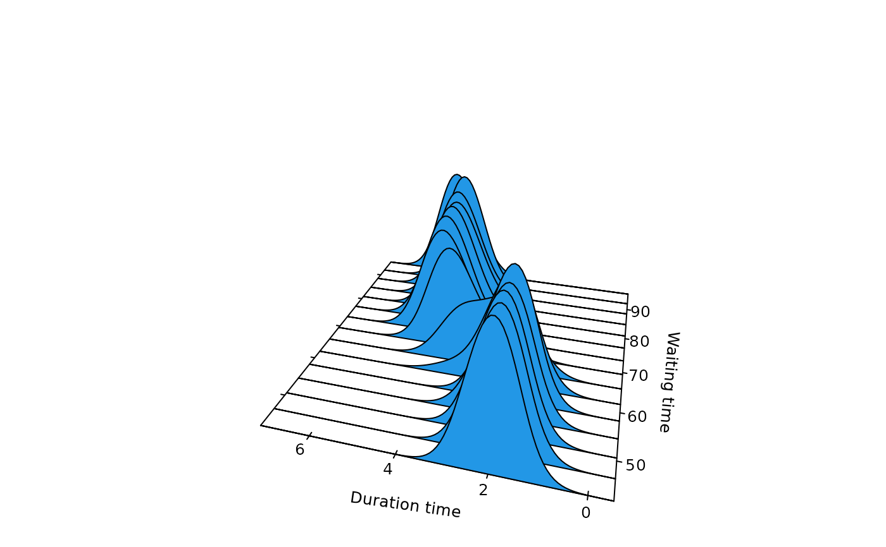
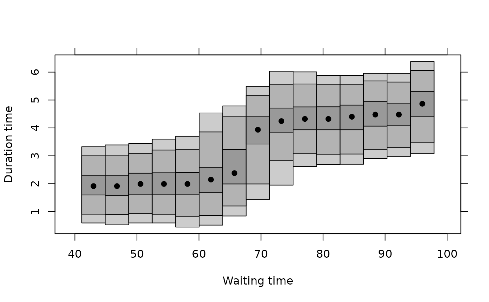
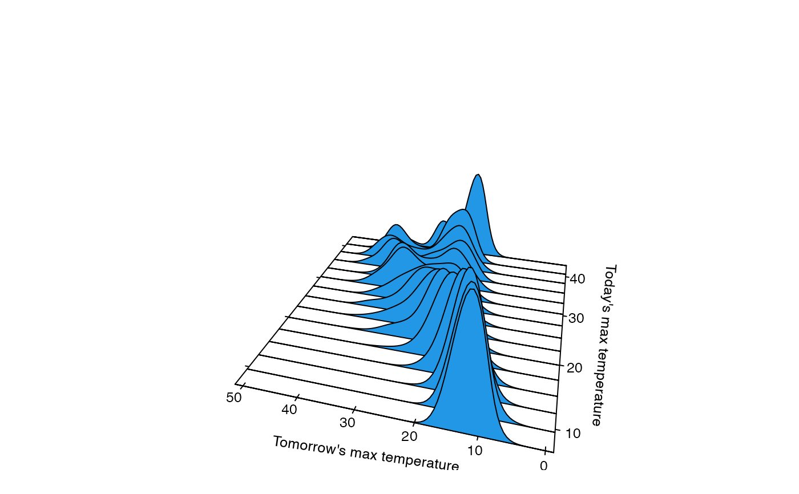

Calculates kernel conditional density estimate using local polynomial estimation.
cde( x, y, deg = 0, link = "identity", a, b, mean = NULL, x.margin, y.margin, x.name, y.name, use.locfit = FALSE, fw = TRUE, rescale = TRUE, nxmargin = 15, nymargin = 100, a.nndefault = 0.3, ... )
| x | Numerical vector or matrix: the conditioning variable(s). |
|---|---|
| y | Numerical vector: the response variable. |
| deg | Degree of local polynomial used in estimation. |
| link | Link function used in estimation. Default "identity". The other possibility is "log" which is recommended if degree > 0. |
| a | Optional bandwidth in x direction. |
| b | Optional bandwidth in y direction. |
| mean | Estimated mean of y|x. If present, it will adjust conditional density to have this mean. |
| x.margin | Values in x-space on which conditional density is
calculated. If not specified, an equi-spaced grid of |
| y.margin | Values in y-space on which conditional density is
calculated. If not specified, an equi-spaced grid of |
| x.name | Optional name of x variable used in plots. |
| y.name | Optional name of y variable used in plots. |
| use.locfit | If TRUE, will use |
| fw | If TRUE (default), will use fixed window width estimation. Otherwise nearest neighbourhood estimation is used. If the dimension of x is greater than 1, nearest neighbourhood must be used. |
| rescale | If TRUE (default), will rescale the conditional densities to integrate to one. |
| nxmargin | Number of values used in |
| nymargin | Number of values used in |
| a.nndefault | Default nearest neighbour bandwidth (used only if
|
| ... | Additional arguments are passed to locfit. |
A list with the following components:
grid in x direction on which density evaluated. Equal to x.margin if specified.
grid in y direction on which density is evaluated. Equal to y.margin if specified.
value of conditional density estimate returned as a matrix.
window width in x direction.
window width in y direction.
Name of x variable to be used in plots.
Name of y variable to be used in plots.
If bandwidths are omitted, they are computed using normal reference rules described in Bashtannyk and Hyndman (2001) and Hyndman and Yao (2002). Bias adjustment uses the method described in Hyndman, Bashtannyk and Grunwald (1996). If deg>1 then estimation is based on the local parametric estimator of Hyndman and Yao (2002).
Hyndman, R.J., Bashtannyk, D.M. and Grunwald, G.K. (1996) "Estimating and visualizing conditional densities". Journal of Computational and Graphical Statistics, 5, 315-336.
Bashtannyk, D.M., and Hyndman, R.J. (2001) "Bandwidth selection for kernel conditional density estimation". Computational statistics and data analysis, 36(3), 279-298.
Hyndman, R.J. and Yao, Q. (2002) "Nonparametric estimation and symmetry tests for conditional density functions". Journal of Nonparametric Statistics, 14(3), 259-278.
Rob J Hyndman
# Old faithful data faithful.cde <- cde(faithful$waiting, faithful$eruptions, x.name="Waiting time", y.name="Duration time") plot(faithful.cde)# Melbourne maximum temperatures with bias adjustment x <- maxtemp[1:3649] y <- maxtemp[2:3650] maxtemp.cde <- cde(x,y, x.name="Today's max temperature",y.name="Tomorrow's max temperature") # Assume linear mean fit <- lm(y~x) fit.mean <- list(x=6:45,y=fit$coef[1]+fit$coef[2]*(6:45)) maxtemp.cde2 <- cde(x,y,mean=fit.mean, x.name="Today's max temperature",y.name="Tomorrow's max temperature") plot(maxtemp.cde)